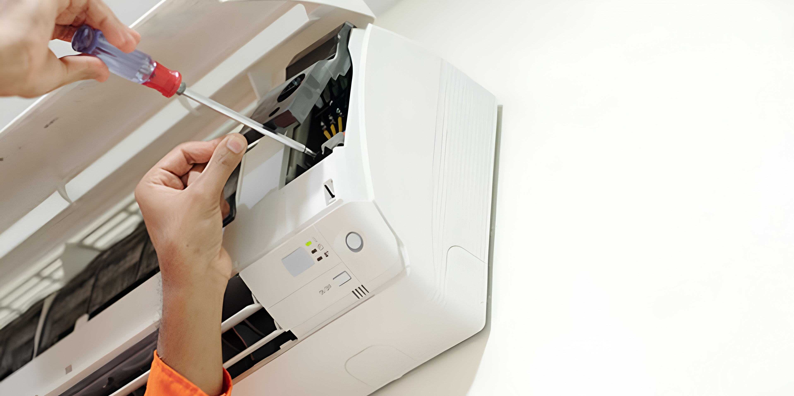

Nuestro servicio
Es importante realizar realizar el mantenimiento adecuado a cualquier equipo electronico, esto asegurara su correcto funcionamiento y asi poder funcionar a toda su capacidad con la mayor eficiencia energetica que se puede lograr.
La mayoria de estos mantenimientos son para prevenir que nuestros equipos se dañen o tengan un funcionamiento indeseado, igualmente es fundamental estudiar el funcionamiento de los equipos para saber si algo anda mal y asi poder encontrar la solucion al problema en cuestion.
Este servicio es gratis si se ha comprado el equipo con nosotros, teniendo derecho a 2 mantenimientos gratis, tambien a 1 reparacion sin costo en mano de obra, unicamente en los repuestos necesarios. Si no se ha comprado el producto con nosotros, tendra un costo de Q300 + cualquier repuesto requerido.